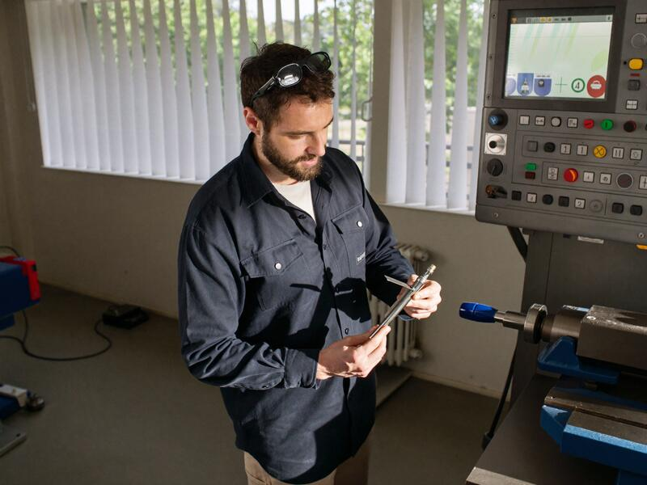
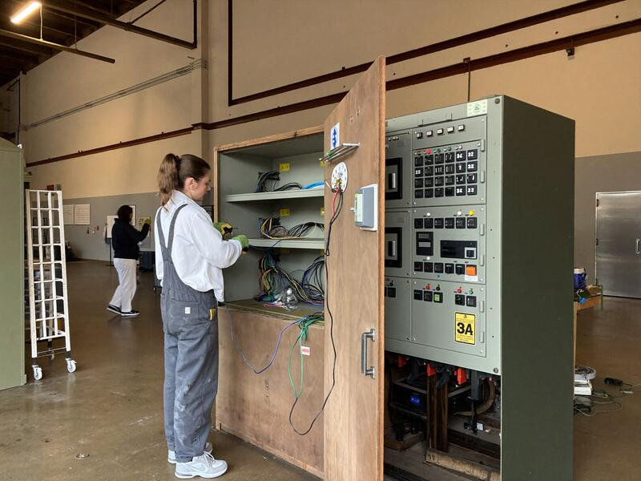
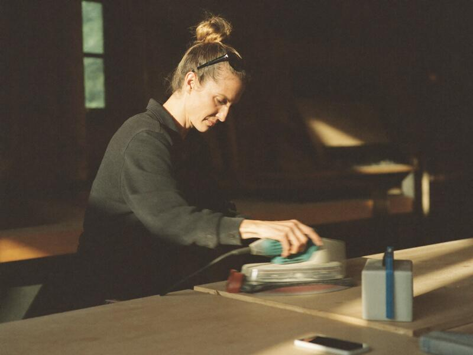
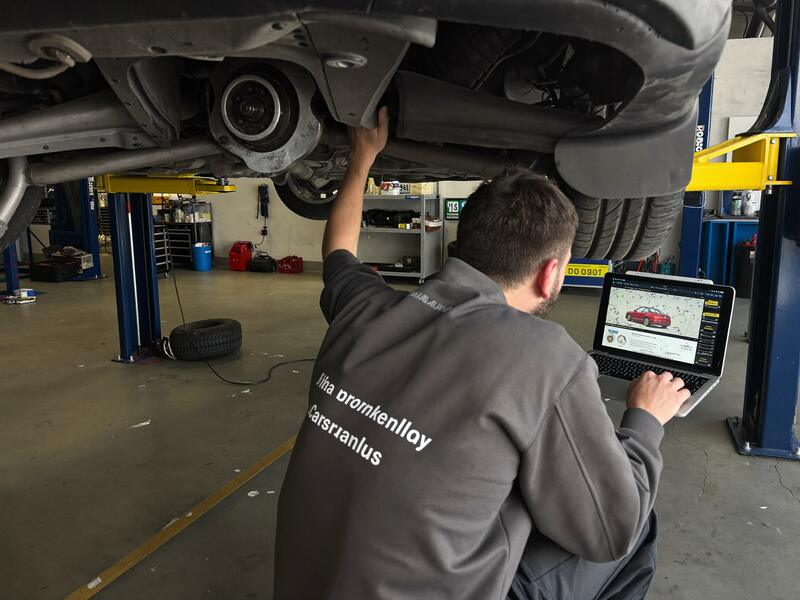
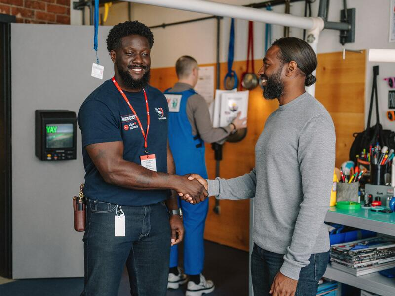
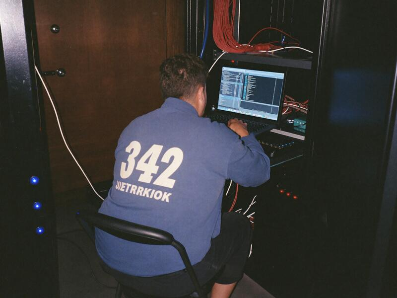
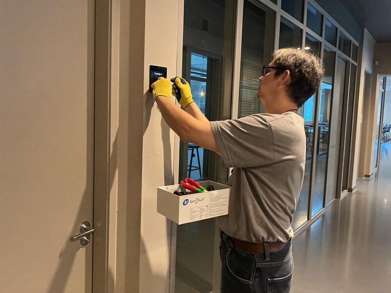
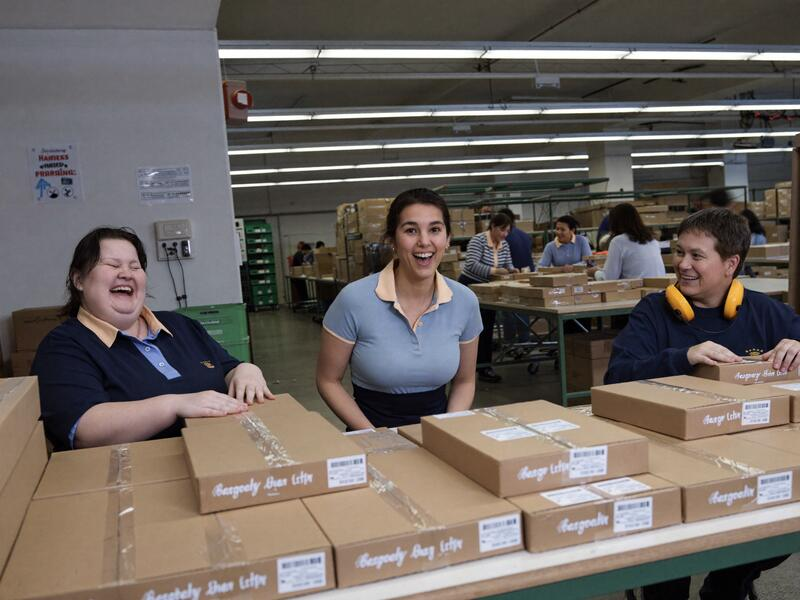

Kostenlose Jobvermittlung
Dein Job passt nicht mehr? Wir finden einen besseren.
Trag dich in 2 Minuten ein. Wir suchen für dich den Betrieb in deiner Nähe, der besser passt – und rufen dich an. Bewerben musst du dich nirgends.
- Kostenlos
- Ohne Lebenslauf
- Dein Chef erfährt nichts
So einfach geht’s
- 1Du trägst dich ein2 Minuten, ohne Lebenslauf
- 2Wir suchen für dichBetriebe in deiner Nähe, die besser passen
- 3Wir rufen dich anNur wenn ein Job wirklich passt

Kennst du das?
Kommt dir davon was bekannt vor?
Die meisten, die sich bei uns melden, haben einen Job. Nur eben nicht den richtigen.
Jeden Tag im Stau
Eine Stunde hin, eine zurück – und das fünfmal die Woche.
Zu wenig Gehalt
Du machst mehr als früher. Auf dem Lohnzettel merkst du davon nichts.
Chef und Kollegen nerven
Kein Danke, schlechte Stimmung, immer dieselben Diskussionen.
Kein Weiterkommen
Mehr Verantwortung? Gibt’s nicht – oder nur ohne mehr Geld.
Seit Jahren dasselbe
Gleiche Halle, gleiche Aufgaben, gleicher Trott.
Schicht passt nicht zum Leben
Familie, Hobby, Feierabend – alles muss sich nach dem Plan richten.
Trifft eins davon zu? Dann suchen wir den Betrieb, der besser passt.
Jetzt Kurzprofil anlegenSo läuft’s
Den ersten Schritt machst du. Den Rest wir.
- 01
Kurzprofil anlegen
Beruf, Erfahrung, Wohnort, Wunschgehalt. Zwei Minuten, kein Anschreiben, kein Lebenslauf.
- 02
Wir gleichen ab
Wir legen dein Profil neben offene Stellen in deiner Nähe: Fahrweg, Schicht, Gehalt, Start.
- 03
Wir rufen dich an
Passt ein Job, sprechen wir zuerst mit dir. Du erfährst, um welchen Betrieb es geht und was er bietet.
- 04
Du entscheidest
Willst du, stellen wir dich vor und machen den Termin mit dem Betrieb aus. Willst du nicht, passiert nichts.
Wer hinter Ländle Jobkompass steckt
Echte Menschen. Kein Bot.
Bei uns landest du nicht in einem Postfach, das nie antwortet. Wir rufen dich persönlich an, hören zu und schauen mit dir, welcher Betrieb wirklich passt.
- Ein fester Ansprechpartner für dich
- Ehrliche Einschätzung statt Massenmails
- Wir melden uns nur, wenn es passt


Vertraulich
Dein Chef erfährt nichts.
Viele, die sich bei uns melden, haben einen Job. Sie wollen nur wissen, ob es woanders besser ist. Darum ist dein Profil bei uns nicht öffentlich.
Kein öffentliches Profil
Keine Jobbörse, keine Suchmaschine. Dein Profil sehen nur wir.
Erst reden wir mit dir
Kein Betrieb erfährt deinen Namen, bevor wir mit dir telefoniert haben und du einverstanden bist.
Du sperrst Betriebe
Sag uns, wo wir dich nicht vorstellen sollen. Zum Beispiel bei deinem jetzigen Arbeitgeber.
Jederzeit löschen
Eine Mail genügt, und dein Profil ist weg.
Der Unterschied
Bewerben wie immer – oder einmal Profil anlegen.
| Thema | Klassisch bewerben | Mit Ländle Jobkompass |
|---|---|---|
| Aufwand | Anschreiben und Lebenslauf für jede Stelle | Ein Kurzprofil, zwei Minuten |
| Gehalt und Schicht | Erfährst du oft erst im Vorstellungsgespräch | Gleichen wir vorher mit deinen Wünschen ab |
| Rückmeldung | Oft lange gar nichts | Wir rufen an, sobald ein Job passt |
| Wer dich sieht | Jeder Betrieb, bei dem du dich bewirbst | Nur Betriebe, denen du zugestimmt hast |
Berufe
15 Richtungen. Eine passt.
Von der Werkstatt über die Baustelle bis ins Büro. Wähl die Richtung, die am besten passt – deinen genauen Beruf fragen wir im Profil. Ist er nicht dabei, schreibst du ihn einfach rein.

Metall & MaschinenbauZerspaner, Industriemechaniker, Schlosser, SchweißerJobs ansehen
Elektro & MechatronikElektroniker, Mechatroniker, ElektrikerJobs ansehen Sanitär, Heizung & KlimaAnlagenmechaniker, Kundendienst, KältetechnikJobs ansehen
Sanitär, Heizung & KlimaAnlagenmechaniker, Kundendienst, KältetechnikJobs ansehen  Bau & AusbauMaurer, Zimmerer, Dachdecker, Maler, FliesenlegerJobs ansehen
Bau & AusbauMaurer, Zimmerer, Dachdecker, Maler, FliesenlegerJobs ansehen 
Holz & InnenausbauSchreiner, Tischler, Monteure, RaumausstatterJobs ansehen
Kfz & FahrzeugtechnikKfz-Mechatroniker, Karosseriebauer, LackiererJobs ansehen Produktion & MontageAnlagenführer, Produktion, MontageJobs ansehen Lager & LogistikLagerlogistik, Stapler, VersandJobs ansehen Fahrer & TransportLkw-Fahrer, Auslieferung, Kran und BaumaschinenJobs ansehen
Produktion & MontageAnlagenführer, Produktion, MontageJobs ansehen Lager & LogistikLagerlogistik, Stapler, VersandJobs ansehen Fahrer & TransportLkw-Fahrer, Auslieferung, Kran und BaumaschinenJobs ansehen  Technik & MeisterTechniker, Meister, KonstrukteureJobs ansehen Büro & VerwaltungKaufleute, Sachbearbeitung, Assistenz, BuchhaltungJobs ansehen
Technik & MeisterTechniker, Meister, KonstrukteureJobs ansehen Büro & VerwaltungKaufleute, Sachbearbeitung, Assistenz, BuchhaltungJobs ansehen 
Vertrieb & KundenserviceInnendienst, Außendienst, Einkauf, KundenserviceJobs ansehen
IT & DigitalesSystemadministration, IT-Support, FachinformatikJobs ansehen
Haustechnik & GebäudeserviceHausmeister, Gebäudereinigung, GrünpflegeJobs ansehen
Helfer & QuereinsteigerOhne Ausbildung – Hauptsache, du packst anJobs ansehenFragen
Was du wissen willst.
Kostet mich das was?
Nein. Für dich ist Ländle Jobkompass kostenlos. Bezahlt werden wir von den Betrieben.
Erfährt mein jetziger Chef davon?
Nein. Dein Profil ist nicht öffentlich, und du kannst Betriebe ausschließen. Bevor wir dich irgendwo vorstellen, sprechen wir mit dir.
Brauche ich einen Lebenslauf?
Für das Kurzprofil nicht. Will ein Betrieb vor dem Gespräch einen sehen, sagen wir dir Bescheid.
Wann meldet ihr euch?
Sobald ein Job dabei ist, der zu deinem Profil passt. Das kann schnell gehen oder etwas dauern – je nachdem, was in deinem Beruf und deiner Gegend gerade frei ist. Wir rufen nur an, wenn es passt.
Was passiert mit meinen Daten?
Wir speichern dein Profil, um es mit offenen Stellen abzugleichen. An einen Betrieb geht es erst, wenn wir telefoniert haben und du einverstanden bist. Löschen lassen kannst du es jederzeit.
Ich weiß nicht genau, wo ich reinpasse.
Wähl die Richtung, die am nächsten dran ist. Viele Betriebe suchen nicht den einen Beruf, sondern jemanden, der zu ihnen passt. Den Rest klären wir am Telefon.
Wer steckt dahinter?
Ländle Jobkompass ist ein Angebot von Ländle Digital GmbH – wir sind Einstellungspartner für Betriebe in ganz Deutschland und bringen sie mit Fachkräften in ihrer Nähe zusammen.
Zwei Minuten. Dann suchen wir.
Kostenlos, vertraulich und ohne Lebenslauf.